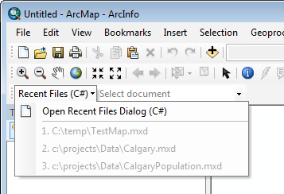

This sample shows how to implement different styles of custom commands—a normal button command, a MultiItem command, and a combo box—to customize ArcGIS for Desktop applications. All three types of commands perform the same functionality: listing and opening recently used documents. This sample also shows how to create a custom toolbar and menu with your custom command.

Screen shot of the Recent Files list
How to create dynamic menu commands using a MultiItem
| Development licensing | Deployment licensing |
|---|---|
| ArcGIS for Desktop Basic | ArcGIS for Desktop Basic |
| ArcGIS for Desktop Standard | ArcGIS for Desktop Standard |
| ArcGIS for Desktop Advanced | ArcGIS for Desktop Advanced |